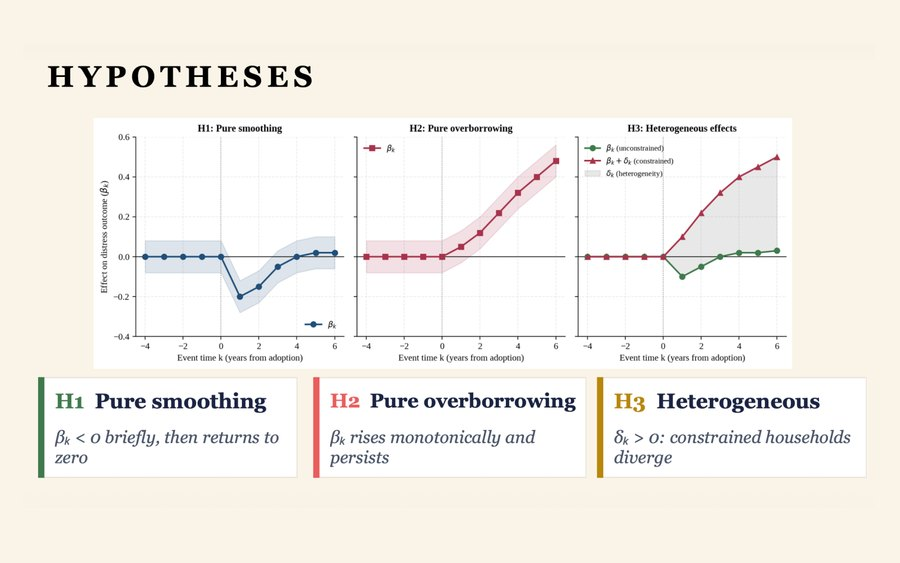
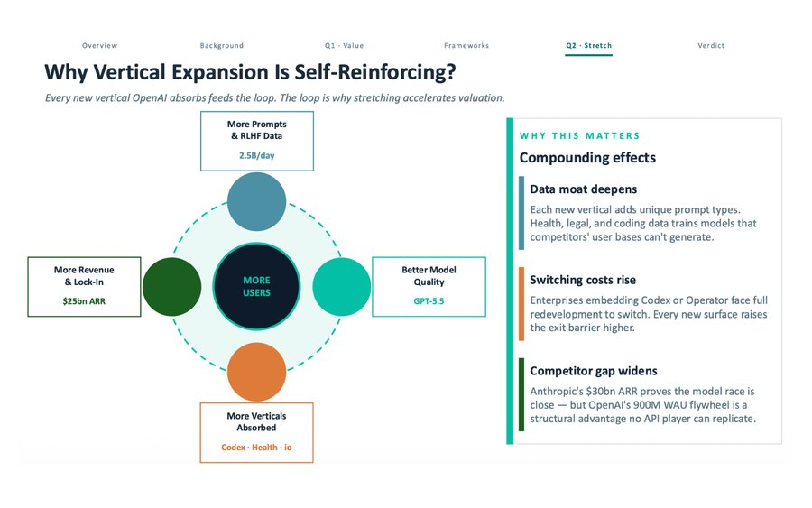
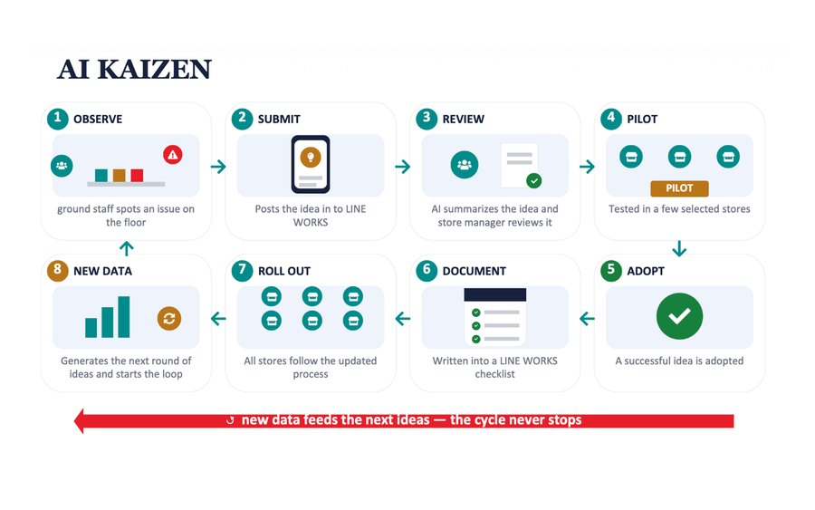
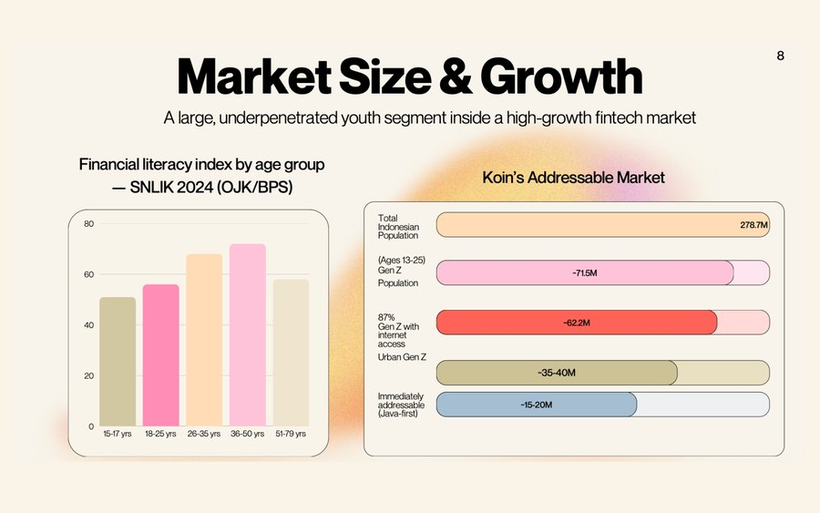
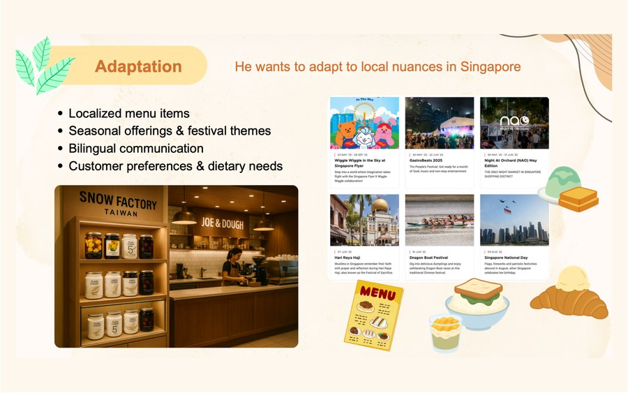
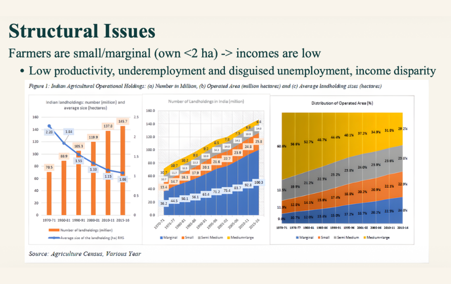
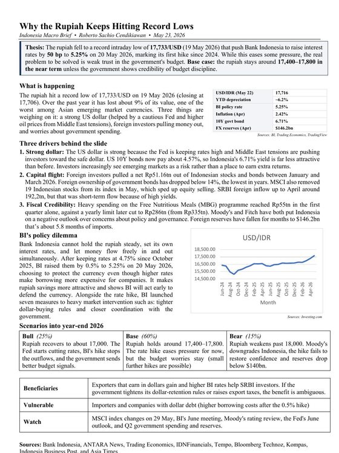
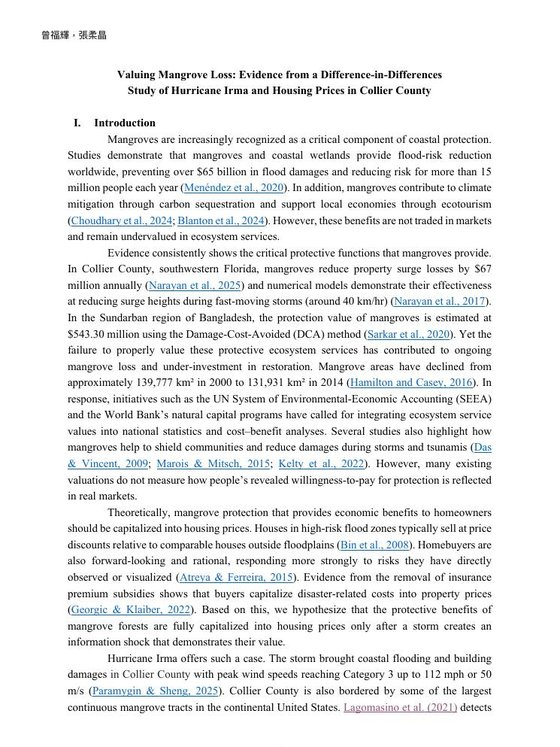

I'm Roberto Sachio Cendikiawan (曾福輝) from Indonesia. My work has ranged from research across business, product QA for an app with 10M+ users, and growing social channels past 100K views. I enjoy moving between analytical work and creative projects.
Outside of that, I love swimming, traveling, or building side projects. I enjoy solving problems, working with teams, and learning from everyone I meet.
B.S. in Agricultural Economics
- Cumulative GPA: 4.08 / 4.30
- Awards: Dean's List, OCAC Scholarship, NTU Presidential Award, 結草銜環 Scholarship.
- Relevant coursework: Macroeconomics, Microeconomics, Accounting, Statistics, Financial Management, Multinational Business Management, Environmental Economics, Financial Markets (Coursera).
Product QA & Office Intern
- Executed 100+ test cases; identified and reported 40+ bugs across device platforms.
- Conducted monetization testing across 5+ languages for a product with 10M+ active users.
- Supported cross-functional workflows and office operations, contributing to an 82.5%+ team satisfaction rate.
Research Assistant
- Researching U.S. semiconductor industrial policy about resilience, localization, and supply chains.
- Cleaned and managed 15M+ administrative labor records and built key variables for analysis.
- Built concordance tables integrating heterogeneous datasets for empirical economic research.
Marketing Intern
- Co-created video content across YouTube, TikTok, Instagram, and X, generating 50,000+ total views.
- Grew LinkedIn organic impressions by 200%+ in three months through content strategy.
- Designed 10+ infographics and wrote SEO-optimized blog content on WordPress.
Event & Marketing
- Supported event execution and on-site coordination for a builders-and-creatives community active in 4 countries.
- Captured photo and video content documenting community events and attendee engagement.
Teaching Assistant (Liberal Education)
- Delivered instructional support for 50+ students in "Biology in the Movies" with a 90%+ satisfaction rate.
- Evaluated weekly assignments and maintained consistent academic standards with timely feedback.
- Led course communications, announcements, and student inquiries.
Social Media Intern
- Produced 100+ videos across X, Instagram, YouTube, and LinkedIn for a Techstars-backed talent marketplace.
- Scaled YouTube to 104K+ views and 193K impressions, boosting subscribers by 15%.
- Grew LinkedIn to 58K+ impressions in 10 months; lifted Instagram engagement 72% in 3 months.
- Built TikTok from 0 to 45K views to expand brand reach.
Public Relations Member
- Supported 120+ Indonesian freshmen with document preparation and academic onboarding in a 300+ member organization.
- Led welcome dinners and orientation events for master's and doctoral students, cutting costs by 10% through efficient budgeting.
- Drove marketing initiatives that increased sales by 50%+ through targeted audience strategies.
- Led the Cultural Division for NTU's Break and Fuse Fest, achieving an 80%+ profit margin on Cultural Indonesia merchandise.

BNPL: Smoothing or Debt Trap, and for Whom?
A research proposal on the welfare effects of Buy Now, Pay Later consumer credit in the United States.

Valuing GenAI Innovation: OpenAI
Led the team valuation of OpenAI and ChatGPT about its value and how far platform stretching can accelerate future valuation.

LINE WORKS AI Adoption: PX Mart
Led the team for company-level AI adoption strategy for PX Mart (全聯福利中心) from analysis to final recommendation.

KOIN (Smarter Money Habits)
A fintech pitch for app that builds smarter money habits. Concept, market, and business model developed with team with my focus on the financial aspects.

Snow Factory Multinational Expansion Project
A group case on Snow Factory's international expansion from market entry, operations, and cross-border strategy.

Analysis of Agricultural Finance in India
An overview of India's agricultural finance system, the farmers it serves, and the challenges its policies face.
Occasional essays and macro briefs.

Why the Rupiah Keeps Hitting Record Lows
Explanation of why Indonesia's currency depreciation continues despite the Central Bank's rigorous policies.
Read the full piece (PDF) →
Valuing Mangrove Loss
What Hurricane Irma and Collier County housing prices reveal about the value of natural coastal protection using a difference-in-differences design.
Read the proposal (PDF) →